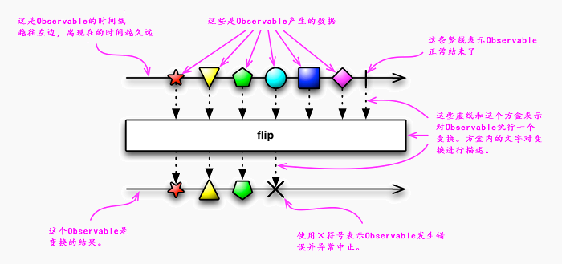

var Placeholder = function(text) {
var el = document.createElement("div");
el.innerHTML = '' + text + '
';
var container = document.getElementById('container');
container.appendChild(el);
}
window.onload = function() {
// 使用timeline插件
var TL = TimelineCanvas;
var tl_input = new TL('input');
var tx = new Placeholder("filter()");
var tl_output = new TL('output');
var timelines = [tl_input, tl_output];
// 数据的创建
var input = Rx.Observable.timer(0, 1000);
var output = input.filter(
function(d) {
return d % 2 == 0
}
);
// 数据容器的创建
[input, output].forEach(function(s, i) {
s.subscribe(
function(d) {
timelines[i].next(d);
},
function(e) {
timelines[i].error(e);
},
function() {
timelines[i].completed();
}
);
});
}
RxJS的文档中普遍采用宝石图/Marble Diagram来帮助我们理解一个操作符 的功能及时序关系
一个操作符通常就是一个变换，在宝石图中用一个居中的方盒表示
方盒的上方表示变换的输入，下方表示变换的输出
时间向右边流动，这意味着右边的数据更新鲜（发生时间离现在更近）
当 一个可观测对象正常结束时（它调用了观测者的onCompleted()方法），使用 一个竖线来标示
如果可观测对象在声明周期内发生了错误，则使用一个叉号 来标示